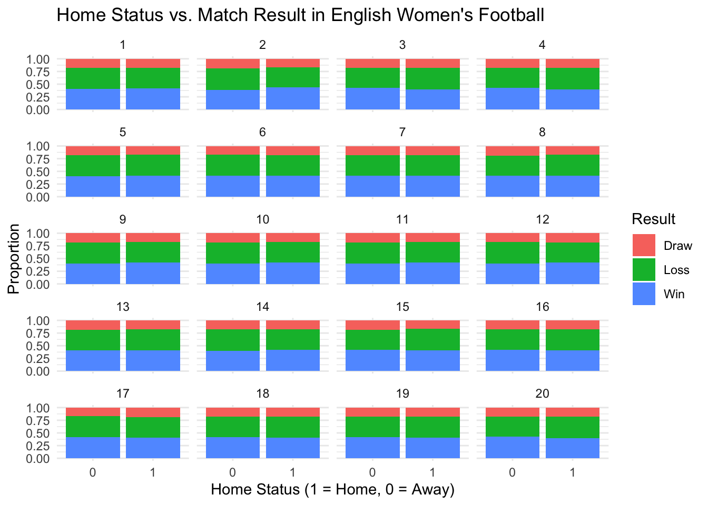

Permutation and Visual Inference on English Women’s Football Data
Author
Charlotte Imbert
Published
November 4, 2024
The Data
The data for this analysis was accessed from the TidyTuesday GitHub repository at https://github.com/rfordatascience/tidytuesday/tree/master/data/2024/2024-07-16. The original data is from the English Women’s Football (EWF) Database, created by Rob Clapp, available at https://github.com/probjects/ewf-database. The dataset contains information on every match played in the English Women’s Super League (WSL), which is the top division of professional women’s football, since 2011, as well as every match played in the Women’s Championship, the second division of professional women’s football, since 2014.
Project Overview
The goal of this analysis is to use a visual lineup protocol to determine whether or not there is a home advantage in professional women’s football. The null hypothesis (single-tailed) is that a team’s home status for a game has no influence on the outcome of that game. The alternative hypothesis is that playing at home is advantageous, which translates to a greater proportion of wins for home teams relative to away teams. To test this hypothesis, I will create a plot showing the relationship between home status and match outcome for the observed data. Then, I will run permutations on the data to generate 20 null plots and I will randomly place the observed data plot among these plots, to see if visual discernment between the observed and permuted data is possible.
EDA
We can start by selecting only the relevant variables and inspecting what the data look like:
df <-as.data.frame(ewf_table)colnames(df) <-c("home", "result", "frequency")ggplot(df, aes(x = home, y = result, fill = frequency)) +geom_tile() +scale_fill_gradient(low ="white", high ="maroon") +labs(title ="Home Status vs. Match Outcome in English Women's Football",x ="Home Status",y ="Outcome",fill ="Frequency") +theme_minimal()
This preliminarily suggests that there might be a home advantage.
Observed Data
We can alternatively display the data using a stacked bar plot:
ewf<- ewf_appearances |>select(home_team, result)ewf$result<-as.factor(ewf$result)ewf$result <-fct_relevel(ewf$result, "Win", "Draw", "Loss")ewf |>ggplot(aes(x =as.factor(home_team), fill = result)) +geom_bar(position ="fill") +labs(x ="Home Status (1 = Home, 0 = Away)", y ="Proportion", fill ="Outcome") +theme_minimal() +ggtitle("Home Status vs. Match Result in English Women's Football")
Again, the data is suggestive of a home advantage since there is a slightly higher proportion of wins when Home Status = 1, i.e. when a team plays at home.
Permutation
Next, a permutation function needs to be created to produce a null sampling distribution:
shuffles |>ggplot(aes(x =as.factor(home_team), fill = perm_result)) +geom_bar(position ="fill") +labs(x ="Home Status (1 = Home, 0 = Away)", y ="Proportion", fill ="Result") +ggtitle("Home Status vs. Match Result in English Women's Football") +theme_minimal() +facet_wrap(~ perm_n, ncol =4)

The 20 plots display stacked bar charts for each permutation. Upon visual inspection, the plots look very similar to each other, and there does not appear to be a home advantage, as expected under the null hypothesis.
Lineup Protocol
To execute a lineup protocol, the plot for the observed data should be placed among the permuted data plots. This can be done by assigning a unique permutation number for the observed data, binding the observed and permuted dataframe by row, and shuffling the order of the plots in the facet wrap:
set.seed(3)observed <- ewf |>mutate(perm_result = result, perm_n =0)random_lvls <-sample(0:20)plots<-rbind(observed, shuffles) |>mutate(perm_n =factor(perm_n, levels = random_lvls)) |>ggplot(aes(x =as.factor(home_team), fill = perm_result)) +geom_bar(position ="fill") +labs(x ="Home Team (1 = Home, 0 = Away)", y ="Proportion", fill ="Result") +ggtitle("Home Status vs. Match Result in English Women's Football") +theme_minimal() +facet_wrap(~ perm_n, ncol =4) +theme(plot.title =element_text(size =100, face ="bold"), axis.title.x =element_text(size =90), axis.title.y =element_text(size =90), axis.text.x =element_text(size =80), axis.text.y =element_text(size =75), legend.title =element_text(size =90), legend.text =element_text(size =88), strip.text =element_text(size =70) )print(plots)
While differences between the plots may not be immediately obvious, especially with the small plot size, upon closer inspection we can see that plot 0 has a higher proportion of wins at home than the other plots. This corresponds to the plot of the observed data. This plot is discernible from the permuted data, but only very slightly.
Conclusion
To summarize, the research question I wanted to answer in my analysis was whether or not there exists a home advantage in professional women’s football in England. The data I used included all matches since 2011 for the top division, and all matches since 2014 for the second division. I started with some exploratory data analysis that visually suggested that there might be a home advantage. To test this further, I permuted the data 20 times to create 20 shuffled datasets. I created a stacked bar plot for each of these shuffled datasets and randomly placed the bar plot for the observed data among the permuted plots. Lastly, I inspected the plots placed side-by-side and determined that the observed data is only slightly discernible from the permuted data. This allowed me to conclude that using a visual inference lineup protocol only provides slight evidence against the null hypothesis that a team’s home status has no influence on the outcome of a match.